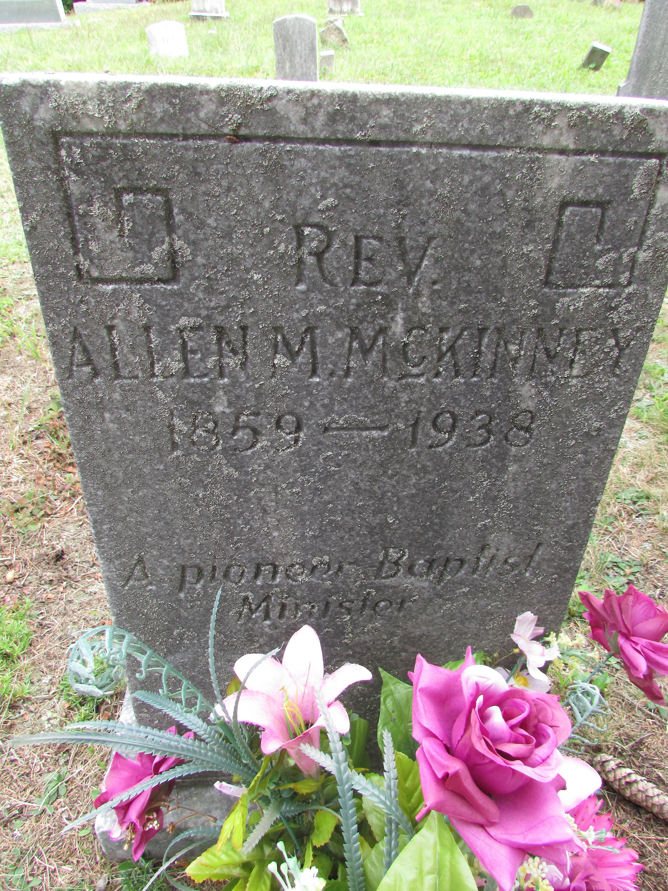
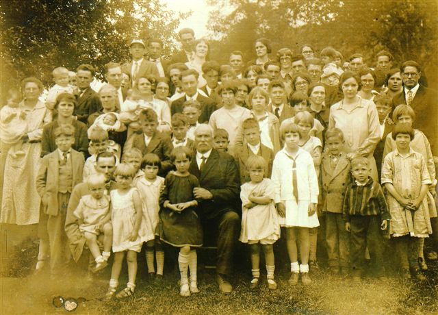

6 February 1859 · age 0 Born at Basin, Wyoming County, Virginia (now West Virginia), son of Samuel Paris McKinney and Mary Elizabeth “Betsey” Dillon (his death certificate)
1877 · age 17–18 Married Margaret Basham, Wyoming County, West Virginia (year and county on the trees; the day is conflicted — see Research Notes)
1878–1906 Nineteen children born, eight of whom died young (Edgar Lee McKinney's family record; Margaret reported 15 born, 9 living, in 1900 and 19 born, 11 living, in 1910)
1881 Son Wesley born at Basin — the direct line (see his page)
1883 Began preaching; family accounts put his first sermon at the Eli place on Devil's Fork (oral history; the ministry itself is on the record — his death certificate gives his occupation as “Retired Minister”)
12 February 1914 · age 55 Margaret died at Ellison (see her page)
August 1914 Married second, Lucinda Aveline “Siney” Lawson (Mann), Raleigh County (compiled; the register has not been read)
2 June 1938 · age 79 Died at his son Isaac's home, 30 D street, Beckley, Raleigh County (his death certificate; his obituary)
4 June 1938 Buried at Ellison (his death certificate; Find a Grave places his marker at Birchfield Cemetery, Ellison Ridge; his obituary says his former home at Streeter — see Research Notes)
Life Story
Allen Marshall McKinney was born on 6 February 1859 at Basin in Wyoming County, Virginia — now West Virginia — the son of Samuel Paris McKinney and Mary Elizabeth “Betsey” Dillon. He farmed his whole working life: every census from 1880 to 1930 lists him as a farmer. And he preached. Family accounts have him beginning to preach in 1883, his first sermon at the Eli place on Devil's Fork, riding a circuit of country churches; the color around it — fifty years in the pulpit, churches planted, marriages and funerals performed — is family lore, carried as lore. The ministry itself is on the record: his death certificate gives his occupation as “Retired Minister,” and his marker calls him “A pioneer Baptist Minister.” His obituary names the churches of his later ministry: Lester, Flat Top, Shady Spring, Ellison's ridge, and Mitchell's ridge.
In 1877, aged seventeen or eighteen, he married Margaret Basham of Mercer County. Nineteen children were born to them between 1878 and 1906; eight died young. Their third child, Wesley, born in 1881, carries the direct line forward. Margaret died on 12 February 1914 at Ellison, aged fifty-two. Allen married again that August, to Lucinda Aveline “Siney” Lawson, previously married to a John Lawson; she outlived him.
Allen died on 2 June 1938 at the Beckley home of his son Isaac, 30 D street, of pneumonia, aged seventy-nine, after more than a year of illness. His funeral was held at the Shady Spring church on 4 June 1938, and he was buried that day — his death certificate gives Ellison, while his obituary says his former home at Streeter (see Research Notes). Two photographs of him survive on his Find a Grave memorial and are shown here: his portrait, and a McKinney reunion group photographed at his home in August 1917.
Gallery

His marker: “Rev. Allen M. McKinney, 1859–1938, A pioneer Baptist Minister.”

McKinney reunion, August 1917, at Allen's home.
Sources and Evidence
West Virginia death certificate, Registration No. 9932, Raleigh County, filed 11 July 1938 (image on Find a Grave memorial 8909294, read with my own eyes): Allen Marshall McKinney, born 6 February 1859, Basin, Wyoming County; died 2 June 1938, Beckley; wife Avaline Mae Lawson; parents Samuel M. McKinney and Betty Dillon; informant Isaac McKinney; occupation “Retired Minister”; burial Ellison, 4 June 1938; cause pneumonia, onset 30 May, with bronchitis and two years of paralysis contributing
Obituary, Register Herald (Beckley), 3 June 1938 (Find a Grave memorial 8909294, photograph of the clipping, read with my own eyes): died at his son Isaac's home, 30 D street, Beckley, at 11 p.m. on 2 June 1938, after more than a year of illness; born Basin 6 February 1859; preached at Lester, Flat Top, Shady Spring, Ellison's ridge, and Mitchell's ridge; funeral at the Shady Spring church, 1 p.m., 4 June 1938, by the Rev. Everett Shafer; burial at his former home at Streeter; survived by his widow Avaline and eleven children, and his brother Joe McKinney of Basin
Edgar Lee McKinney's family record: the nineteen-children roster, carried in the couple profile
Census counts: Margaret reported 15 children born, 9 living, in 1900 and 19 born, 11 living, in 1910
Find a Grave memorial 8909294, Rev Allen Marshall McKinney: born 6 February 1859, died 2 June 1938, Beckley; marker photographed (reads “Rev. Allen M. McKinney, 1859–1938, A pioneer Baptist Minister”); burial given as Birchfield Cemetery, Ellison Ridge
Find a Grave memorial 8909299, Margaret Lucinda Basham McKinney: born 11 June 1861, died 12 February 1914; marker photographed (reads “Margaret L., wife of Eld. A. M. McKinney, born June 11, 1861, died Feb. 12, 1914”)
Geni profiles, click-verified 4 November 2026: Allen (born 6 February 1859, died 2 June 1938, Beckley), Margaret (born 11 June 1861, died 12 February 1914), their twenty listed children, Allen's twelve listed siblings, Margaret's listed siblings, and Allen's second wife Lucinda Aveline “Siney” Lawson (Mann)
Tricia's Shamblen/McKinney Family Tree, Ancestry tree 44342901 (Contributor access, 4 November 2026): “Alan Marshall McKinney” (person 6189642062), born 6 February 1859, died June 1938, Beckley; married 27 February 1877, Basin; parents Samuel Paris McKinney and Mary Elizabeth Dillon; only Margaret as spouse; only Wesley shown as a child; both galleries empty
Couple research notes: the 3 October 2026 dig synthesis (Margaret's birth-month and second-wife angles, children's date grades, William Blaine Basham's first marriage) and the 22 October 2026 grab-sweep findings
Research Notes and Open Questions
Name: this page uses “Margaret Basham” for his wife, not the “Margaret Lucinda Basham” form carried on Geni, Find a Grave, and the Ancestry tree. The Lucinda form appears to conflate her with Allen's second wife, Lucinda — see her page and the note on Wesley's page. The Each Generation page still displays her as 'Margaret Lucinda Basham'; that display text is linked, not renamed.
Marriage day: four forms conflict — 27 February 1877 (Edgar Lee McKinney's family record and a family compilation), 2 March 1877 (the Darnell family sheet), 27 July 1877 (a USGenWeb transcription of the Wyoming County register naming J. H. Cook as officiant), and 27 March 1877 at Odd in Raleigh County (FamilySearch from other contributors). The county register image has not been read, so the page carries the year and county only. Tricia's tree gives 27 February, matching the family-record day, but that is a tree-level claim, not the register.
Margaret's birth month: the page carries 11 June 1861, Mercer County — her marker reads June 11, 1861, four compilations and the 1900 census's June 1861 birth month agree, and a WikiTree data field that once read July 11 contradicted its own profile's sources (June) and reads as a data-entry slip. Tricia's tree gives 10 December 1861, Greenbrier — not adopted. Her 1914 death-register entry, which would settle the month by age in years, months, and days, sits on a FamilySearch film (Summers County deaths 1871–1968) and has not been pulled.
Burial: his death certificate names Ellison only. Find a Grave places his marker at Birchfield Cemetery, Ellison Ridge; that cemetery attribution is Find a Grave-level, flagged here, not certificate-level. The same applies to Margaret's marker.
Second wife: see the Spouse card note. Her name at record level is “Avaline Mae Lawson” from his death certificate; “Lucinda Aveline (Mann)” and the Mann parentage are compiled, and the Raleigh County marriage register (August 1914) has not been read. She has no profile in Tricia's Ancestry tree — a finding about that tree only, not proof against the marriage, which Geni, the census household, and the death certificate all support.
Children: the roster follows the folder (nineteen). Geni lists a twentieth child, Shirley J McKinney, who is not in the folder roster and is not carried here. Wesley is the direct line; his own page carries his record-level dates. Isaac Edmond's parentage is documented: he was the informant on Allen's death certificate. Children's dates are graded in the folder notes: twelve of eighteen supported by census overlap, the six young deaths unproved by a record.
Joseph Floyd: his birthplace (Ellison against Basin) and death place (Ansted against Beckley) conflict across sources; his own pass settles them. Okla Allen carries a conflation risk: a same-compilation “Wiley McKinney, born 1903, died 26 April 1996, Itman” shares his exact death date but is a different person.
Siblings: Allen's twelve siblings are Geni's list, not the folder's — the couple profile does not roster them. Margaret's siblings are Geni's list with the folder's correction (James Preston as a half-brother) — see her page.
Ancestry tree conflicts, not adopted: the tree spells him “Alan,” not “Allen,” and shows no “Rev.” title; it shows only Wesley of the nineteen children, no siblings for either spouse, no second wife, and a Wesley profile that marries him to Lona Jane Lilly in 1907 and puts his death in January 1966 at Ellison — against the folder's Wesley (married Genettie Ellen Canaday in 1900, died 21 September 1966 at Phoenix). That tree Wesley profile conflates or mis-attaches a later life and is not carried anywhere here beyond this flag.
Denomination: the folder synthesis left Allen's denomination open (“Regular Baptist” label against Samuel Mitchell's Methodist). His marker settles it at marker level: “A pioneer Baptist Minister.” His marker also styles him “Rev.,” and his wife's marker calls him “Eld.”
Find a Grave photographs: seven of the eight memorial photographs were pulled and filed in the couple folder (both portraits, both markers, the reunion group, and his death-certificate image). The eighth — his Register Herald (Beckley) obituary photograph, added 25 November 2021 — could not be pulled on 4 November 2026 because Find a Grave blocked the browser; it was retrieved on 5 November 2026 and is filed in the research folder and cited in Sources.
Burial: his death certificate gives Ellison, 4 June 1938, and his marker stands at Birchfield Cemetery, Ellison Ridge; his obituary says burial would be at his former home at Streeter. The two readings are not reconciled here. His obituary also names a surviving brother, Joe McKinney of Basin, and eleven surviving children.
Open items: (1) Margaret's 1914 death-register entry (FamilySearch film) — settles her birth month, burial, cause, and informant. (2) The 1877 Wyoming County marriage register image — settles the day. (3) The second marriage record (Raleigh County, August 1914) and the second wife's post-1938 death record — settle her name at record level. (4) William Blaine Basham's compiled service record — belongs to William and Julina's own pass. (5) Linda Birchfield's article on Margaret in Mercer County History (1987) — the strongest unexploited Margaret lead.
No twins among Allen and Margaret's children, by the census counts and the family record.
Photographs: the couple folder also holds five contextual place photographs and two portraits filed with a provenance note — a Dumire family portrait and an unidentified young woman from the WVU archive — which are NOT Allen and Margaret and are never captioned as them. The portraits shown here are the Find a Grave memorial portraits. His Register Herald obituary (3 June 1938) is filed in the research folder and cited in Sources; it is not shown in a gallery.
Profile history: Created 4 November 2026 from the family couple profile and research notes.